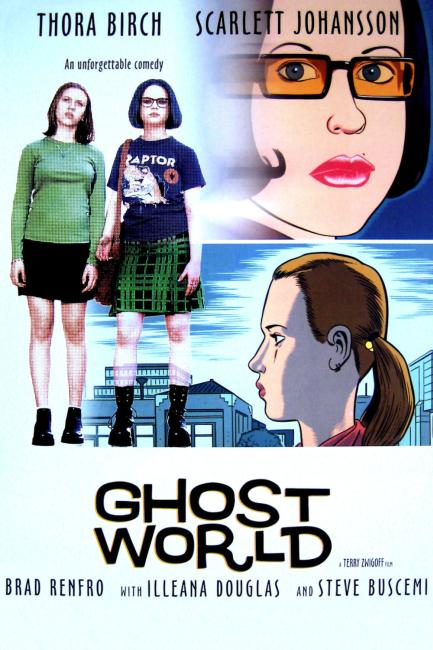

Ghost World is a graphic novel by Daniel Clowes. It was serialized in issues #11–18 (June 1993 – March 1997) of Clowes's comic book series Eightball, and was published in book form in 1997 by Fantagraphics Books. It was a commercial and critical success and developed into a cult classic.
Ghost World follows the day-to-day lives of best friends Enid Coleslaw and Rebecca Doppelmeyer, two cynical, pseudo-intellectual, and intermittently witty teenage girls recently graduated from high school in the early 1990s. They spend their days wandering aimlessly around their unnamed American town, criticizing popular culture and the people they encounter while wondering what they will do for the rest of their days. As the comic progresses and Enid and Rebecca make the transition into adulthood, the two develop tensions and drift apart. A darkly written comic, with intermittently sombre explorations of friendship and modern life, Ghost World has become renowned for its frank treatment of adolescence.

The comic's success led to a United Artists movie adaptation of the same name, released in 2001 at the Seattle International Film Festival to critical acclaim and numerous nominations, including a nomination for the Academy Award for Writing Adapted Screenplay, written by Clowes and Terry Zwigoff. It had little box office impact and has become a cult film. Starring Thora Birch, Scarlett Johansson, Brad Renfro, Bob Balaban, Illeana Douglas, Steve Buscemi.